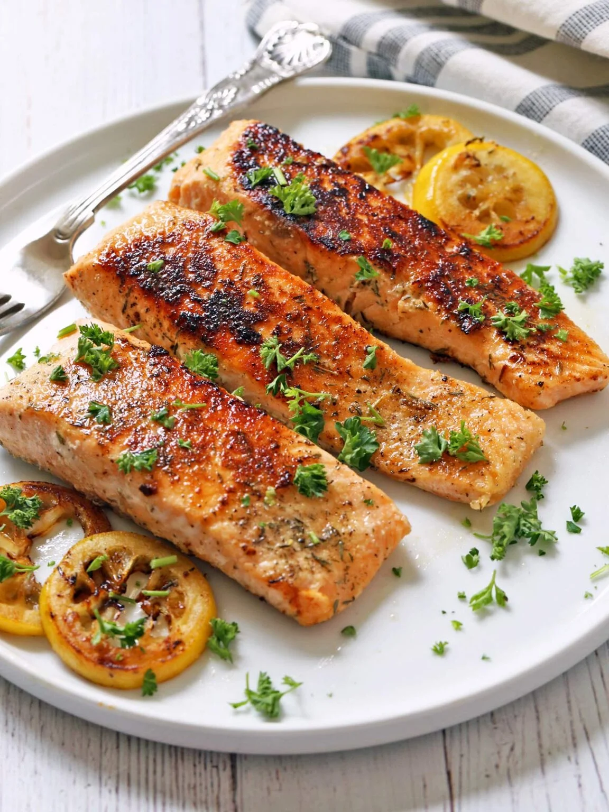

Home
Crispy Pan Fried Salmon

Crispy Pan Fried Salmon sourced from Healthy Recipes.
Ingredients
- 4 salmon fillets - 6 ounces each, 1-inch thick, skin on, pin bones removed
- ½ teaspoon Diamond Crystal kosher salt - or ¼ teaspoon of any other salt, including Morton kosher salt
- ¼ teaspoon black pepper
- ½ teaspoon garlic powder
- ¼ teaspoon dried thyme
- 1 tablespoon olive oil
- 1 tablespoon butter
- Optional: 4 lemon slices - ¼-inch thick
- Optional: 2 tablespoons parsley - chopped
Steps
- Blot the salmon fillets dry with paper towels. Season them with salt, pepper, garlic powder, and dried thyme.
- Heat a large (12-inch) cast-iron skillet over medium-high heat. Add the olive oil and butter and swirl to coat. You can also use a nonstick skillet.
- When the butter starts foaming, add the salmon fillets, skin-side-down. If using, add the lemon slices.
- Cook the salmon, undisturbed, until the skin is crispy and browned, for about 4 minutes. Flip the salmon and lemon slices, lower the heat to medium, and continue cooking for 3 more minutes.
- If your fillets are 1 inch thick, cook the edges for about 2 minutes per side. This helps ensure the salmon reaches an internal temperature of 145ºF.
- Transfer the salmon fillets to a serving plate and drizzle them with the pan juices. Garnish the plate with lemon slices and chopped parsley, and serve.
Notes
- If your salmon is frozen, thaw it thoroughly before using it in this recipe. You can thaw it overnight in the fridge.
- You can skip the olive oil and use two tablespoons of butter. The butter's milk solids have a blackening effect, making the salmon extra-crispy.
- The best skillets for this recipe are nonstick or well-seasoned cast-iron skillets. I don't recommend using a stainless steel skillet - the salmon skin tends to stick to it.
- Don't forget to drizzle the salmon with the pan juices after you've arranged it on the plates. The pan sauce is delicious.
- You can keep the leftovers in an airtight container in the fridge for up to three days. I prefer to avoid reheating them because reheating can dry them out and make them taste fishy. Instead, I crumble them cold over a salad.